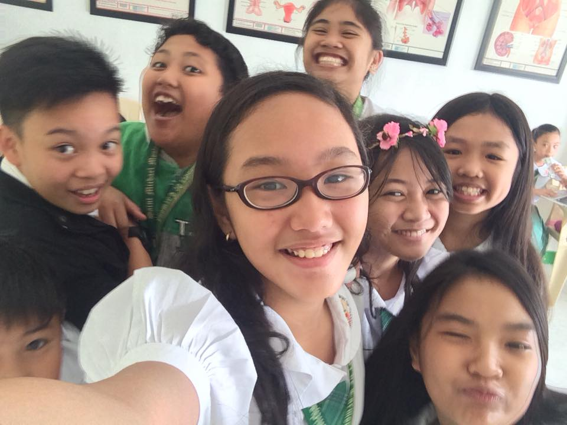
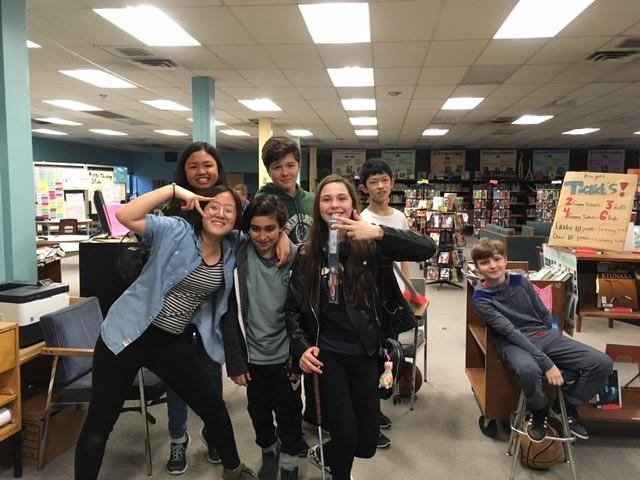

Most of my life, I've been totally surrounded by family. Grandparents, aunts, uncles, and many, many cousins. It's actually fairly common where I came from to live with your parents even after having a family or at least, live close to them.
Back in the Philippines, my parents actually owned a business so I spent a lot of time growing up with my grandparents. Not that I didn't enjoy it. I absolutely loved spending time with my grandparents!
But actually, when I said "my grandparents", I meant my mom's parents. My dad's parents and family lived far and we really only saw them during the Christmas and summer break. But as I said in the " about me"
page, I moved to Canada 3 years ago which meant leaving those family behind.
Lucky for me however, I have family here in Canada too! Two of my mom's sisters live here, which means cousins,
whom I've never really gotten to spend time with before since they lived most of their lives here while I was in the Philippines. With my younger cousins,
my sister and I basically acted like big sisters. We played, did crafts and did whatever toddlers did. With the older ones though, we had so much fun!
Even if we never really got to be with them before, we bonded quick. We hung out, played video games, had sleepovers and everything.
Turns out, we actually wanted to do/experience similar things like swimming, rollercoasters, drop towers, ziplines and etc! I can, without a doubt, say that I absolutely adore spending time with my family.

Elementary Friends
Ever since I was young, it's always been easy for me to make friends. Now, that might sound like a very good thing but really, it isn't.
It usually meant I had trouble keeping the friends I made 'cause I had the mindset of "Oh, I'll just make some new ones. It's fine.". I never had best friends.
I always wanted them though. No offense to my old friends but they weren't really my friends. I did many academic contests in the Philippines and my "friends" there were just the kids who always did academic contests like me too.
We just sort of made do with what we had. Having tens of hours of practices before, throughout and after school, we eventually reached some sort of friendship. Here though, I actually have real friends!!

Middle School Friends
Speaking of my real friends, I met my best friend, Lucia, in 6th grade. We were in the same class and she had friends of her own then.
But we swiftly bonded over our similar interests and aspirations. Soon enough, we were talking about everything with each other. 7th grade rolls around and we're still in the same class!
We meet Emmalyn, who we've met before, briefly, and we quickly get her into the group along with her friends, Victor, Daniel and Atrin, who we've also met before briefly.
We spend every moment of 7th grade together including lunch and after school. Sadly, at the end of 7th grade, Atrin had to move.
In 8th grade, Daniel didn't get to be in the same class as the rest of us. We meet another guy though, Andrei, and we all become close friends fast!
We go to the mall, have sleepovers and even give each other Christmas gifts!(I got a stuffed Llama from Andrei. Why? Long story.) Only Victor, Lucia and I are still in high school together though.
Emmalyn didn't apply for IB and Andrei decided to go to another school. It's alright though, I already made new friends in this class even with the COVID restrictions!
|